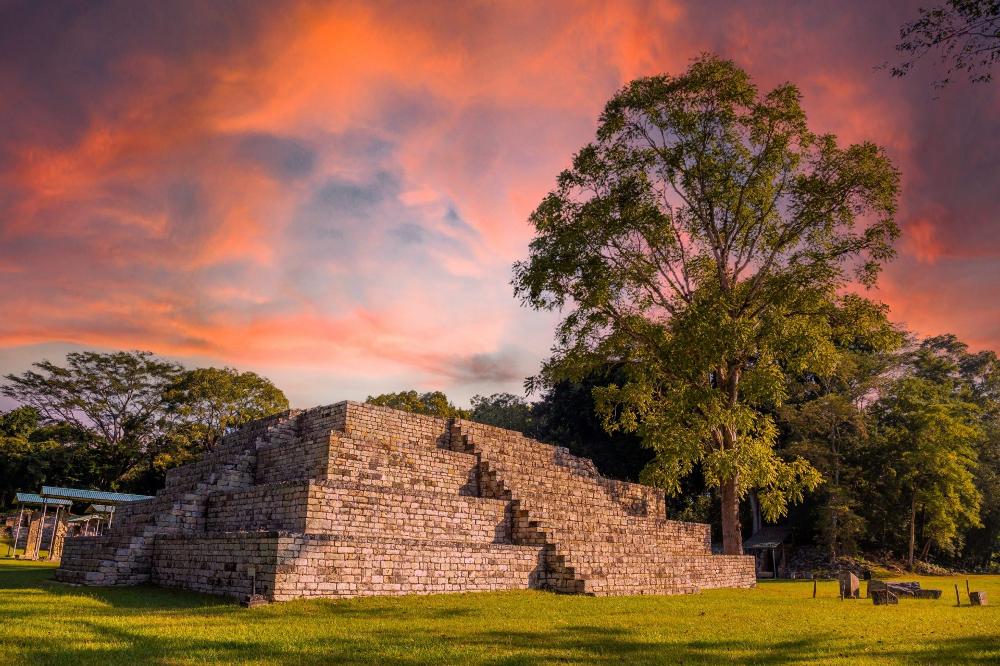
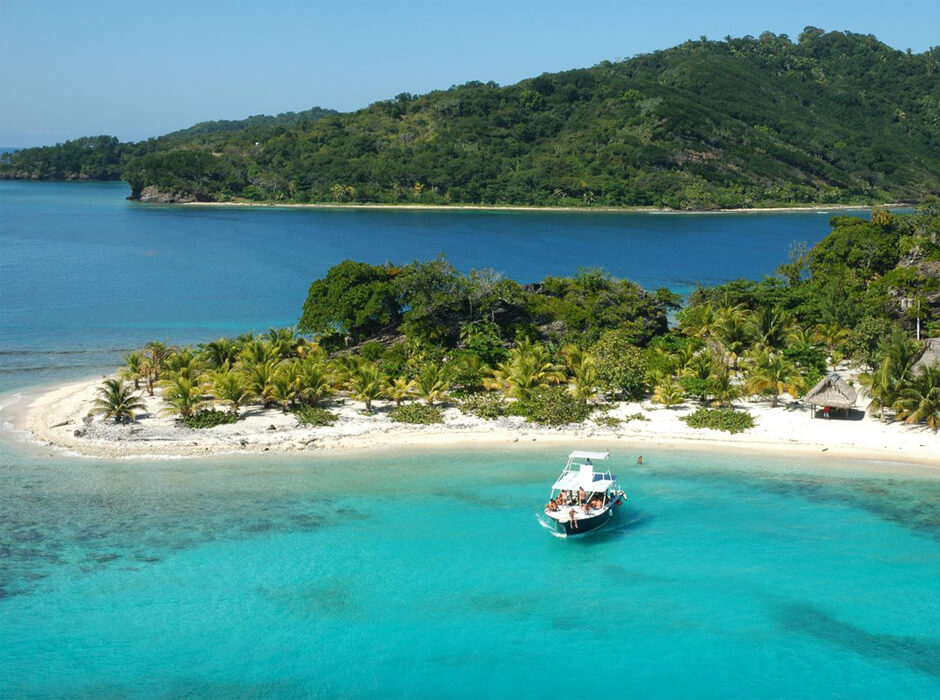
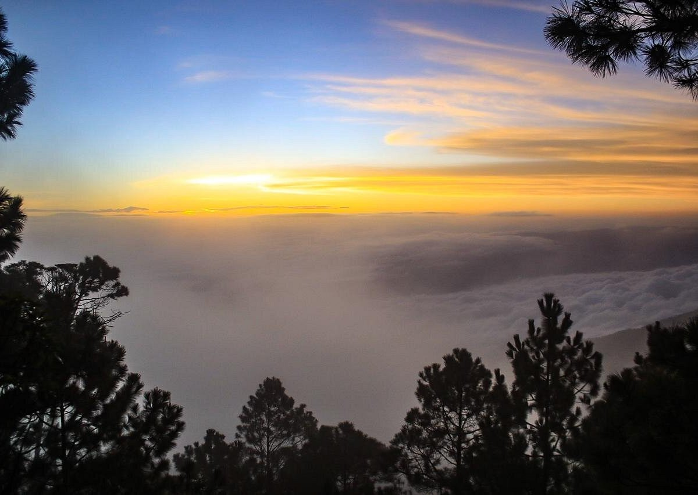

En conmemoración del Feriado Morazánico
"Patria, libertad y unión: el legado de Francisco Morazán vive en nuestra tierra."
Descubre las maravillas geográficas, la riqueza étnica y la calidez de nuestro pueblo. Este portal es tu guía digital para explorar el patrimonio histórico, natural y cultural de Honduras. ¡Prepárate para una experiencia inolvidable!
Conoce destinos emblemáticos, planifica tu ruta ecológica y reserva tours guiados con respeto por la naturaleza y el patrimonio.

Ciudad maya de gran importancia, famosa por sus estelas, jeroglíficos y el juego de pelota. Patrimonio de la Humanidad por la UNESCO.

Parte del segundo sistema de arrecifes más grande del mundo. Ideal para buceo, snorkel y observación de vida marina.

Bosques nublados, cascadas y la montaña más alta de Honduras (Celaque). Perfecto para senderismo y ecoturismo de altura.